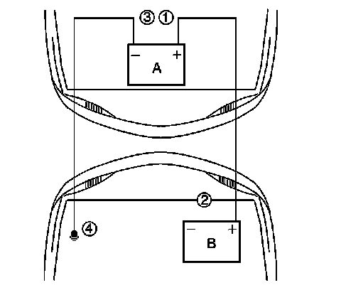

Jump Starting In Case of Emergency
JUMP STARTING IN CASE OF EMERGENCY
CAUTION: Batteries produce explosive gases. Batteries contain corrosive acid. Batteries supply levels of electrical current high enough to cause burns. Therefore, in order to reduce the risk of personal injury while working near a battery, observe the following guidelines:
- Always shield your eyes.
- Avoid leaning over the battery whenever possible.
- Do not expose the battery to open flames or sparks.
- Do not allow battery acid to contact the eyes or the skin.
- Flush any contacted areas with water immediately and thoroughly.
- Get medical help.
NOTE: This vehicle has a 12 volt, negative ground electrical system. Make sure the vehicle or equipment being used to jump start the engine is also 12 volt, negative ground. Use of any other type of system will damage the vehicle's electrical components.
1. Position the vehicle with the booster battery so that the jumper cables will reach.
- Do not let the 2 vehicles touch.
- Make sure that the jumper cables do not have loose ends, or missing insulation.
2. Place an automatic transmission in PARK. If equipped with a manual transmission, place in NEUTRAL and set the parking brake.
3. Turn OFF all electrical loads on both vehicles that are not needed. Leave the hazard flashers ON, if required.
4. Turn OFF the ignition on both vehicles.
5. IMPORTANT: Some vehicles have a battery remote positive stud. ALWAYS use the battery remote positive stud in order to give or to receive a jump start.

Connect the red positive (+) cable to the battery positive (+) terminal (2) of the vehicle with the discharged battery.
6. Connect the red positive (+) cable to the positive (+) terminal (1) of the booster battery.
7. Connect the black negative (-) cable to the negative (-) terminal (3) of the booster battery.
8. CAUTION: Do not connect a jumper cable directly to the negative terminal of a discharged battery to prevent sparking and possible explosion of battery gases.
The final connection is made to a heavy, unpainted metal engine part (4) of the vehicle with the discharged battery.This final attachment must be at least 46 cm (18 in) away from the dead battery.
9. Start the engine of the vehicle that is providing the boost and perform the following:
- Turn OFF all accessories.
- Raise the engine RPM to approximately 1,500 RPM for 5 minutes.
10. NOTE: Never operate the starter motor more than 15 seconds at a time without pausing in order to allow it to cool for at least 2 minutes. Overheating will damage the starter motor.
Crank the engine of the vehicle with the discharged battery. If the engine does not crank or cranks too slowly, perform the following:
- Turn the ignition OFF.
- Allow the booster vehicle engine to run at approximately 1,500 RPM for an additional 5 minutes.
- Attempt to start the engine of the vehicle with the discharged battery.
11. After the engine of the vehicle with the discharged battery starts, remove the jumper cables as follows:
- The black negative (-) cable must be first disconnected from the vehicle that was boosted (4).
- Disconnect the black negative (-) cable from the negative (-) terminal (3) of the booster battery.
- NOTE: Do not let the cable end touch any metal. Damage to the battery and other components may result.
Disconnect the red positive (+) cable from the positive (+) terminal (1) of the booster battery.
- Disconnect the red positive (+) cable from the remote positive (+) terminal (2) of the vehicle with the discharged battery.